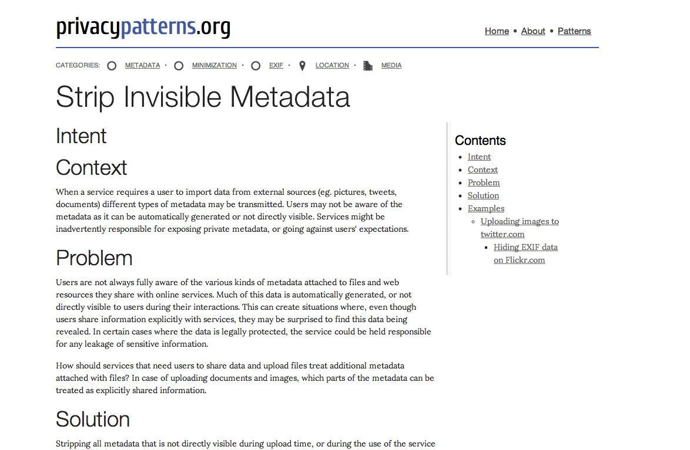

Privacy Patterns
Privacy Patterns (http://privacypatterns.org) provides design solutions to common privacy problems, with the goal of translating “privacy-by-design” into practical advice for software engineering. Another student and I implemented the project from the ground up, but worked with a Ph.D student and alumnus who started the project and wrote content. I focused on thinking through the user experience of accessing and contributing content, then executed that vision in the design and layout of the site.